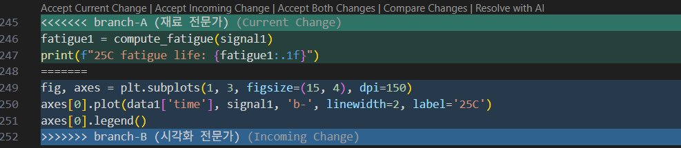

Example: Material Testing Analysis by Temperature
As experimental conditions increase, spaghetti code becomes copy-paste hell, while modular code handles it with a single line in config.
Monolithic Script
Configurations, logic, and outputs are all mixed in one file.
import pandas as pd
import numpy as np
import matplotlib.pyplot as plt
# Experiment 1
data1 = pd.read_csv('exp_25C.csv')
signal1 = data1['stress'].values
mean1, std1, peak1 = np.mean(signal1), np.std(signal1), np.max(signal1)
print(f"25C: mean={mean1:.2f}, std={std1:.2f}, peak={peak1:.2f}")
# Experiment 2 ← Copy-paste
data2 = pd.read_csv('exp_50C.csv')
signal2 = data2['stress'].values
mean2, std2, peak2 = np.mean(signal2), np.std(signal2), np.max(signal2)
print(f"50C: mean={mean2:.2f}, std={std2:.2f}, peak={peak2:.2f}")
# Experiment 3 ← Copy-paste again
data3 = pd.read_csv('exp_75C.csv')
signal3 = data3['stress'].values
mean3, std3, peak3 = np.mean(signal3), np.std(signal3), np.max(signal3)
print(f"75C: mean={mean3:.2f}, std={std3:.2f}, peak={peak3:.2f}")
# Visualization
fig, axes = plt.subplots(1, 3, figsize=(15, 4))
axes[0].plot(data1['time'], signal1); axes[0].set_title('25C')
axes[1].plot(data2['time'], signal2); axes[1].set_title('50C')
axes[2].plot(data3['time'], signal3); axes[2].set_title('75C')
plt.savefig('comparison.png')
plt.show()
Problems
- "Please add a 100°C experiment" →
data4,signal4,mean4... copy-paste again. - "Please find the peak time" → Must be added in 3 (later 4) different places.
- "The file path changed" → Must open and modify the code directly.
Modular Code
Project Structure
engineering_project/
├── config.json ← Input/output configs
├── experiment.py ← Experiment data class
├── visualizer.py ← Visualization
└── main.py ← Execution flow only
Separating I/O with config
Change settings without touching the code.
{
"experiments": [
{"name": "25°C", "filepath": "exp_25C.csv"},
{"name": "50°C", "filepath": "exp_50C.csv"},
{"name": "75°C", "filepath": "exp_75C.csv"}
],
"output": {
"save_path": "comparison.png"
}
}
Code for Processing Experiment Data
import pandas as pd
import numpy as np
class Experiment:
def __init__(self, name, filepath):
self.name = name
self.filepath = filepath
self.time = None
self.signal = None
self.stats = {}
def load(self):
data = pd.read_csv(self.filepath)
self.time = data['time'].values
self.signal = data['stress'].values
def analyze(self):
self.stats = {
'mean': np.mean(self.signal),
'std': np.std(self.signal),
'peak': np.max(self.signal),
}
def summary(self):
print(f"[{self.name}] "
f"mean={self.stats['mean']:.2f}, "
f"std={self.stats['std']:.2f}, "
f"peak={self.stats['peak']:.2f}")
Code Dedicated to Visualization
import matplotlib.pyplot as plt
def plot_comparison(experiments, save_path=None):
fig, axes = plt.subplots(1, len(experiments), figsize=(5 * len(experiments), 4))
for ax, exp in zip(axes, experiments):
ax.plot(exp.time, exp.signal)
ax.set_title(exp.name)
ax.set_xlabel('Time (s)')
ax.set_ylabel('Stress (MPa)')
plt.tight_layout()
if save_path:
plt.savefig(save_path)
plt.show()
main Code for Overall Flow
import json
from experiment import Experiment
from visualizer import plot_comparison
with open('config.json') as f:
cfg = json.load(f)
experiments = []
for exp_cfg in cfg['experiments']:
exp = Experiment(exp_cfg['name'], exp_cfg['filepath'])
exp.load()
exp.analyze()
exp.summary()
experiments.append(exp)
plot_comparison(experiments, save_path=cfg['output']['save_path'])
Scenarios Highlighting the Benefits
Adding Experimental Conditions
Adding Features: "Please find the peak time"
def analyze(self):
self.stats = {
'mean': np.mean(self.signal),
'std': np.std(self.signal),
'peak': np.max(self.signal),
}
def find_peak_time(self):
idx = np.argmax(self.signal)
self.peak_time = self.time[idx]
def summary(self):
print(f"[{self.name}] "
f"mean={self.stats['mean']:.2f}, "
f"std={self.stats['std']:.2f}, "
f"peak={self.stats['peak']:.2f}")
def analyze(self):
self.stats = {
'mean': np.mean(self.signal),
'std': np.std(self.signal),
'peak': np.max(self.signal),
}
+ def find_peak_time(self):
+ idx = np.argmax(self.signal)
+ self.peak_time = self.time[idx]
+
def summary(self):
print(f"[{self.name}] "
f"mean={self.stats['mean']:.2f}, "
f"std={self.stats['std']:.2f}, "
f"peak={self.stats['peak']:.2f}")
main.py (inside the loop):
Changing Input Format: "Switch from CSV to HDF5"
Version Control: Tracking Changes with git diff
Monolithic Script
--- a/analysis.py
+++ b/analysis.py
@@ ... Must find what changed in a single 30-line file ...
+ peak_time1 = data1['time'].values[np.argmax(signal1)]
+ print(f"25C peak time: {peak_time1:.2f}")
...
+ peak_time2 = data2['time'].values[np.argmax(signal2)]
+ print(f"50C peak time: {peak_time2:.2f}")
...
+ peak_time3 = data3['time'].values[np.argmax(signal3)]
+ print(f"75C peak time: {peak_time3:.2f}")
Modular Code: The changed files and intentions are immediately visible.
Collaboration: Modifying Different Files, Minimizing Merge Conflicts
Two people working simultaneously:
- A (Materials Expert): Adds fatigue life calculation to analysis logic.
- B (Visualization Expert): Improves graph legends and styles.
Monolithic Script: Both modify the single analysis.py file. Touching the same section causes merge conflicts.
Inserts fatigue calculation right below the 25°C summary print.
Changes the visualization block following the same print to update dpi, legends, and line styles.
@@
print(f"25C: mean={mean1:.2f}, std={std1:.2f}, peak={peak1:.2f}")
+
+fatigue1 = compute_fatigue(signal1)
+print(f"25C fatigue life: {fatigue1:.1f}")
+
fig, axes = plt.subplots(1, 3, figsize=(15, 4))
@@
print(f"25C: mean={mean1:.2f}, std={std1:.2f}, peak={peak1:.2f}")
-fig, axes = plt.subplots(1, 3, figsize=(15, 4))
-axes[0].plot(data1['time'], signal1); axes[0].set_title('25C')
+fig, axes = plt.subplots(1, 3, figsize=(15, 4), dpi=150)
+axes[0].plot(data1['time'], signal1, 'b-', linewidth=2, label='25C')
+axes[0].legend()
# analysis.py (git merge result)
print(f"25C: mean={mean1:.2f}, std={std1:.2f}, peak={peak1:.2f}")
<<<<<<< branch-A (Materials Expert)
fatigue1 = compute_fatigue(signal1)
print(f"25C fatigue life: {fatigue1:.1f}")
=======
fig, axes = plt.subplots(1, 3, figsize=(15, 4), dpi=150)
axes[0].plot(data1['time'], signal1, 'b-', linewidth=2, label='25C')
axes[0].legend()
>>>>>>> branch-B (Visualization Expert)
Modular Code: A only modifies experiment.py, and B only modifies visualizer.py. Separated files mean separated diffs, allowing seamless merges without conflicts.
def analyze(self):
self.stats = {
'mean': np.mean(self.signal),
'std': np.std(self.signal),
'peak': np.max(self.signal),
}
self.fatigue = compute_fatigue(self.signal)
def summary(self):
print(f"[{self.name}] "
f"mean={self.stats['mean']:.2f}, "
f"std={self.stats['std']:.2f}, "
f"peak={self.stats['peak']:.2f}, "
f"fatigue={self.fatigue:.1f}")
def plot_comparison(experiments, save_path=None):
fig, axes = plt.subplots(1, len(experiments), figsize=(5 * len(experiments), 4), dpi=150)
for ax, exp in zip(axes, experiments):
ax.plot(exp.time, exp.signal, label=exp.name)
ax.set_title(exp.name)
ax.set_xlabel('Time (s)')
ax.set_ylabel('Stress (MPa)')
ax.legend()
plt.tight_layout()
if save_path:
plt.savefig(save_path)
plt.show()
--- a/experiment.py
+++ b/experiment.py
def analyze(self):
self.stats = {
'mean': np.mean(self.signal),
'std': np.std(self.signal),
'peak': np.max(self.signal),
}
+ self.fatigue = compute_fatigue(self.signal)
def summary(self):
print(f"[{self.name}] "
f"mean={self.stats['mean']:.2f}, "
f"std={self.stats['std']:.2f}, "
- f"peak={self.stats['peak']:.2f}")
+ f"peak={self.stats['peak']:.2f}, "
+ f"fatigue={self.fatigue:.1f}")
--- a/visualizer.py
+++ b/visualizer.py
- fig, axes = plt.subplots(1, len(experiments), figsize=(5 * len(experiments), 4))
+ fig, axes = plt.subplots(1, len(experiments), figsize=(5 * len(experiments), 4), dpi=150)
for ax, exp in zip(axes, experiments):
- ax.plot(exp.time, exp.signal)
+ ax.plot(exp.time, exp.signal, label=exp.name)
ax.set_title(exp.name)
ax.set_xlabel('Time (s)')
ax.set_ylabel('Stress (MPa)')
+ ax.legend()
Resolving Merge Conflicts
VS Code visually highlights merge conflicts, making it easy for users to select the desired branch's changes.

Code Maintenance and Scalability
Comparison Summary
| Monolithic Script | Class-based Modular Code | |
|---|---|---|
| Add Experiment | Copy-paste in 3-4 places | 1 line in config |
| Add Feature | Modify for every experiment | Add 1 method |
| Change Input Format | Search entire code | Modify only load() |
| Result Preservation | Variables get mixed up | Maintained independently per object |
| 10 Experiments | 40 lines of copy-paste | 10 lines in config |
git diff |
Changes scattered in one file | Changed files & intentions are clear |
| Collaboration | Same file → conflicts | Different files → auto-merge |